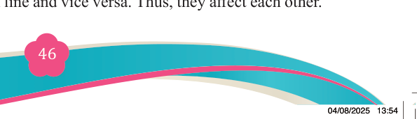
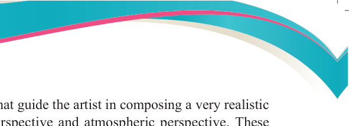
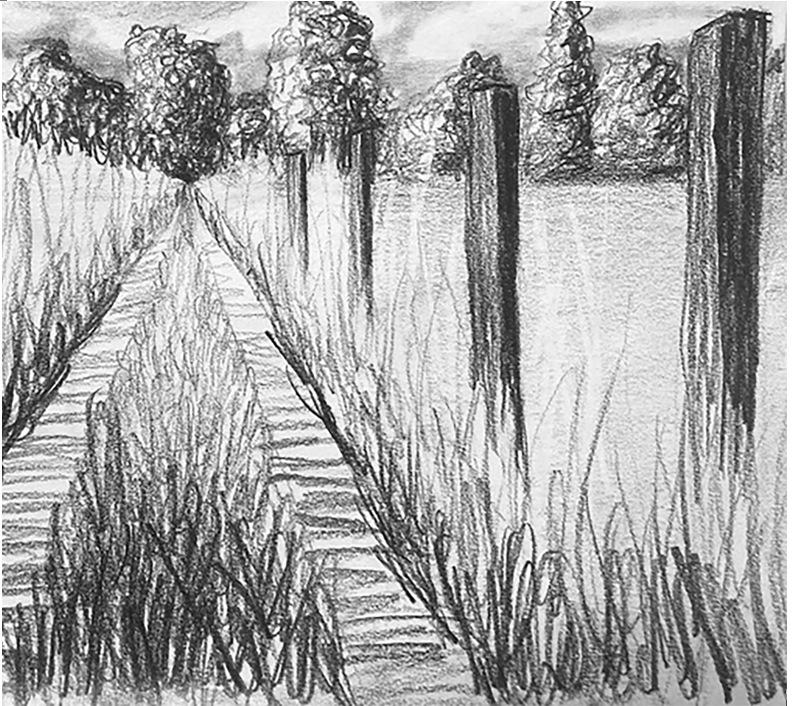

Fine Art for Secondary Schools

46


Student’s Book Form Two

Categories of perspective
Perspective has two categories that guide the artist in composing a very realistic
work, these types are linear perspective and atmospheric perspective. These

categories work perpendicularly to create an illusion involving three dimensions.
In this area you will learn the types of perspective and how to use them in drawing
objects as you see them instead of how actually they are.
(a) Linear perspective
Linear perspective is a system of creating illusion of depth on a flat surface.
It is a way of using lines to depict distance and depth. The Artists who do not
have the knowledge of linear perspective fail to draw objects on a flat surface,
as a result an illusion of distance and depth cannot be created. Figure 3.15 displays the linear perspective.

Figure 3.15: A Linear perspective of a landscape
Elements of linear perspective
In using a linear perspective, there are important elements that provide guidance throughout the process as follows:
(i) Horizon line/eye level
The horizon line is a point at which the sky and the ground level meet. We
know that they do not actually meet but this is how we see them in our
environment. Horizon line is sometimes referred to as eye level because eye
level determines the horizon line and vice versa. Thus, they affect each other.
04/08/2025 13:54